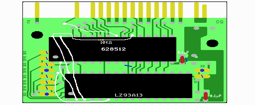
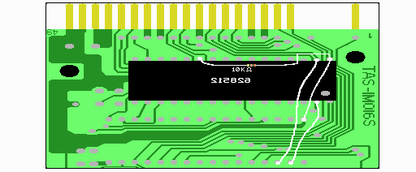
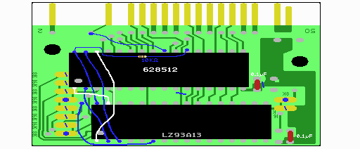
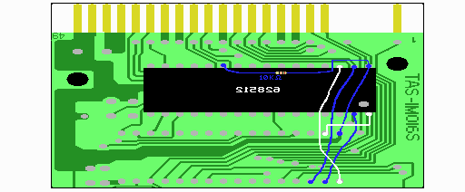

７．SRAMの取り付け
いよいよ半田付けです。結構楽しいです。各チップの向きなどは、実体図を参考にして下さい。
SRAMの3〜30ピンが、ＲＯＭのあった場所の1〜28ピンに収まるようにとりつけます。
SRAMの1, 2, 31, 32ピンは浮くというか、はみ出る格好になります。
まず、表の628512の3〜29ピンを半田付けします。（30ピンは基板とつなげません。）
次に、裏の628512の足が上を向いている3〜21, 23〜29ピンを半田付けします。22ピン同士は付けないことに注意して下さい。多目の半田で表の足と一緒にくっつけます。
足を上に向けなかった人もほぼ同じです。ただ、ピンの足が長くてケースを閉じるとき邪魔になるので、短くカットする必要があります。取り付けた時に裏の628512は型番が読めなくなるようになります。方向を間違えない様に気を付けましょう。
これでSRAMの3〜15、17〜21、23、25〜28番ピンの接続が完了しました。
配線は回路図や実体図をよく見て行ってください。回路図では、緑の線でかかれた配線です。


SRAMの22ピンと32ピンの間に表から抵抗を付けます。裏表両方のSRAMについて行ってください。（SRAMの22ピンと5Vの間に抵抗をつけるのであれば、どこのＶＤＤ（５Ｖ）とつなげてもかまいません。）
SRAMの31ピンとLZA93A13の3ピンを繋ぎます。これでA15ができます。これも両側のSRAMに付けます。
SRAMの2ピンとLZ93A13の2ピンを繋ぎます。これでA16ができます。これも両側のSRAMに付けます。
LZ93A13の6ピンを基板左側の半月状部分の右側、下から3&4番目と繋がるように配線します。実体図をよく見てやってください。これでSRAMの/WR信号ができます。
実体図に従って、SRAMの24ピン(/OE)と本体へのコネクタ14ピン(/RD)を繋ぎます。これでSRAMの/OEができます。
基板の裏面の実体図ではTAS-1M016Sと描かれていますが、TAS-1M008Sでも同じです。
ここまで、回路図の下記の部分の配線が完了です。
628512 2ピン A16 - B3 2ピン LZ93A13
628512 24ピン /OE - /RD(slot)
628512 29ピン /WE - /WE 6ピン LZ93A13
628512 31ピン A15 - B2 31ピン LZ93A13
628512 32ピン VDD - VDD 32ピン LZ93A13 5V
10KΩの抵抗×2
見やすくするために、図を分けましたが、あと少し配線があります。


SRAMの1ピンとLZA93A13の31ピンを繋ぎます。これでA18ができます。これも両側のSRAMに付けます。
SRAMの30ピンとLZ93A13の1ピンを繋ぎます。これでA17ができます。これも両側のSRAMに付けます。
ここまで、回路図の下記の部分の配線が完了です。（緑の配線は全て完了です。）
628512 1ピン A18 - B5 31ピン LZ93A13
628512 31ピン A17 - B4 1ピン LZ93A13
 次へ
次へ
この説明も分からなくても構いません。
ここでは、SRAMがどのように使われているかを説明します。
資料を見てもらえれば分かる通り、LZ93A13からはバンク番号の最上位ビットの信号(B7)がありません。バンク00〜7Fhと80〜FFhを区別するために、読み込み時は/OExx-xx、書き込み時は/WE80-FFを使います。これにより読み込みは/OExx-xx指定により自由に行えますが、書き込みはバンク80-FFのみに限定されます。似非RAMではバンク00-7Fと80-FFは同じで、システム部はバンク00-0x(80-8x)、ディスク部は0x+1〜7F(8x+1〜FF)となっています。起動時に読まれるよう、システム部はバンク00-0xで使われますが、ディスク部は読み書きできるように8x+1-FFで扱われます。そのためにSRAMの/OEには/RDをいれ、読む際にはバンク00〜7Fでも80〜FFでも読めるようになっているわけです。 (xはDOS1インストール時1、DOS2時は7かそれ以上です。)